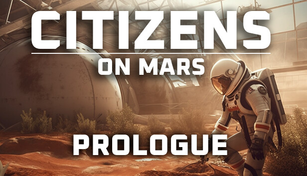
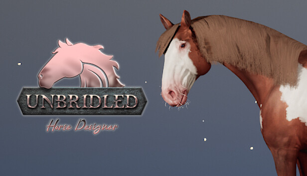
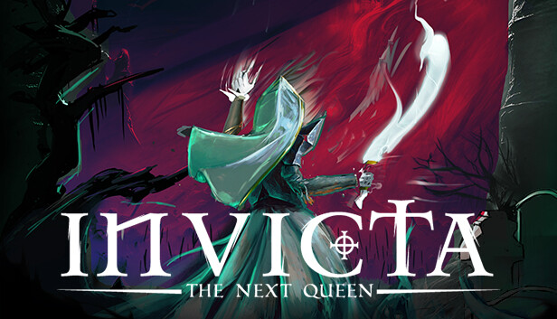

Steam recebe quatro novos jogos grátis! Conheça e resgate agora
Para quem está procurando por novas aventuras sem gastar nada, a Steam adicionou em seu catálogo uma seleção de jogos gratuitos que prometem horas de diversão. Confira a seleção de lançamentos free-to-play que o Voxel fez e saiba como resgatar os títulos para curtir totalmente na faixa!
Desde a gestão de uma colônia em Marte, passando por explorações de cavernas cheias de perigos, até a luta intensa para reivindicar um trono infernal e a criação de cavalos, há algo para todos os gostos. Saiba mais sobre cada game a seguir:
1. Citizens: On Mars - Prologue
Se você curte games de construção de colônias por turnos, vai adorar Citizens: On Mars - Prologue. Nele, assumimos o papel de líder de um assentamento marciano que precisa sobreviver e prosperar no ambiente hostil e implacável do Planeta Vermelho.
2. Unbridled: Horse Designer
Unbridled: Horse Designer é simulador de criação de cavalos, no qual podemos personalizar o nosso próprio equino com diferentes cores, padrões, acessórios e habilidades. Também é possível explorar um mundo aberto cheio de aventuras, desafios e segredos. Para resgatar, basta acessar a sua página na Steam e clicar em "Jogar".
3. Cave Crawlers

Cave Crawlers é uma experiência de aventura e exploração que leva os jogadores a um mundo subterrâneo cheio de perigos e mistérios. Podemos escolher entre diferentes personagens, cada um com suas próprias habilidades e equipamentos, e enfrentar criaturas hostis, armadilhas mortais e enigmas desafiadores.
4. INVICTA: The Next Queen
INVICTA: The Next Queen é um game de estratégia e aventura que coloca os players no papel de uma princesa que precisa se tornar a próxima rainha de um reino em guerra. Será preciso enfrentar inimigos, aliados, intrigas e desafios para conquistar o trono e restaurar a paz.
Com uma história envolvente e muitas opções de personalização para o seu personagem e o seu exército, ele pode ser uma boa escolha se você é fã de mundos de fantasia. Para resgatar, basta acessar a sua página na Steam e clicar em "Jogar".